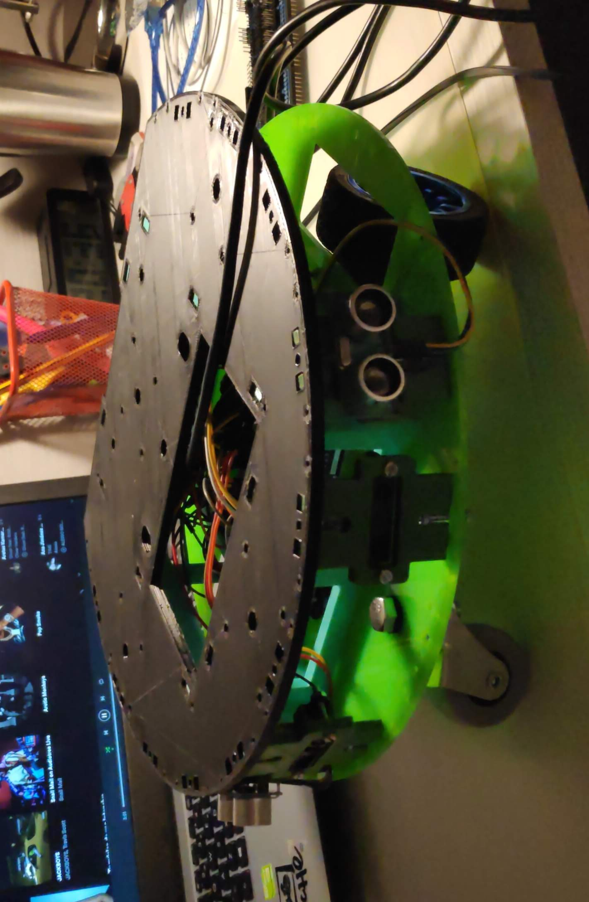

I’m a Mechatronics Engineer specialized in Robotics and Automation. Here’s some background about me:
I have always had great interest in the advances of the engineering and tech industries. That’s the reason why I decided to study the B. Sc. in Electronics, Robotics and Mechatronics Engineering. I wanted to be capable of understand the various disciplines related to the most cutting edge innovations.


After graduating, I’ve studied a M.Sc. in Mechatronics Engineering, focusing the optional courses to extend my knowledge in robotics, computer vision, AI and electronics.
In the makings of my Master's thesis, I collaborated with the UMA Robotics and Mechatronics Lab, where I developed an app to integrate 5G smartphones in a ROS network for missions that involve rescue robots and survey and emergency corps. The app is Open-Source and you can check it in this repository.
During my last two years in college, I was a member of the UMA Garage Autonomous Driving Team where I developed software for a 1/10 scaled car that needed to drive autonomously. The final system was presented and evaluated in the Autonomous Driving Challenge 2021 organized by CARNET, Seat and the Volkswagen Research Group in Barcelona.
I invite you to take a look at the Posts section, where I explain some some of these projects and more. Feel free to contact me through my email or at my LinkedIn account.
Thanks for reading!